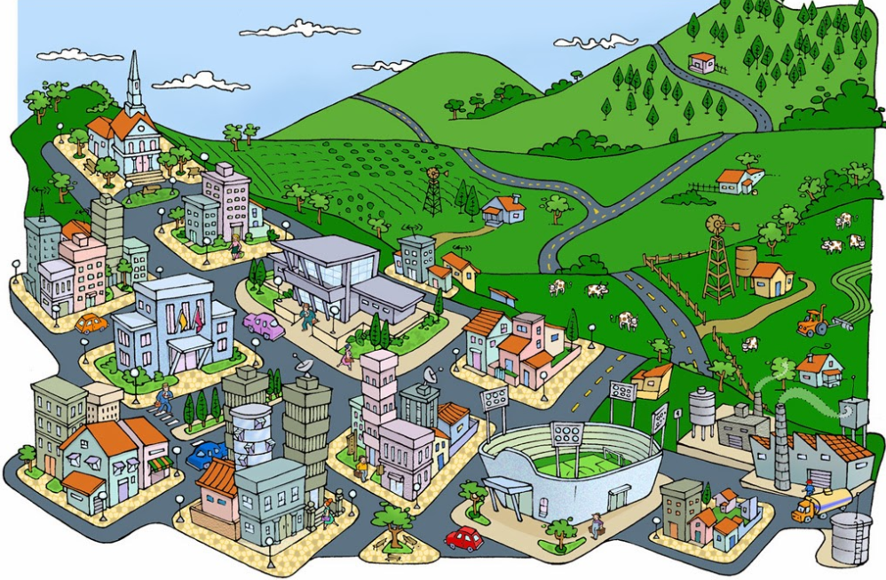

ALGUMAS DIFERENÇA ENTRE CIDADE E CAMPO
Cidade moderna movimenta a vida dos homens como se fossem máquinas, e todas as ações são regidas pelo “tempo rápido”. Mas o campo, cada vez mais modernizado, também já aderiu às práticas ritmadas da globalização. Antes, eram apenas as grandes cidades que se apresentavam como o império da técnica, objeto de modificações, supressões, acréscimos, cada vez mais sofisticados e mais carregados de artifício. Esse mundo artificial inclui, hoje, o mundo rural, meio técnico-científico-informacional atinge também o campo..
Caracterísrtica do campo: "é a área em que acontecem as atividades primárias. Agricultura, pecuária, extrativismo e caça são alguns dos exemplos de práticas que caracterizam e dão forma a esses espaços.".
Caracterísrtica da cidade: " Área fisicamente integrada numa cidade de grande ou média dimensão, caracterizada por uma importante percentagem de superfície construída, uma elevada densidade de população e de emprego e redes significativas de infra-estruturas de transportes e outras.".
É importante para a economia e para a sociedade, sendo a responsável pelo fornecimento de matérias-primas e alimentos, além da preservação do meio ambiente e a manutenção da cultura local.
São convencionadas como funções sociais urbanísticas: habitação, trabalho, lazer e mobilidade; funções de cidadania: educação saúde, segurança e proteção; e as funções de gestão: prestação de serviços, planejamento, preservação do patrimônio cultural e natural, e sustentabilidade urbana.